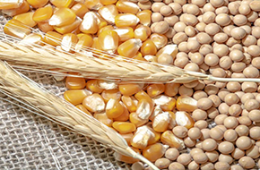
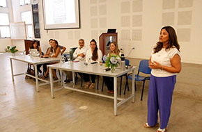
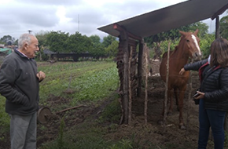

SOSTENIBILIDAD
Nuestra Experiencia en Sostenibilidad
En esta sección compartimos nuestros trabajos académicos de extensión, en educación ambiental. Más de 20 años investigando y aplicando los conceptos de Sostenibilidad y Agroecología nos han permitido compartir con diversos actores en territorio, construyendo conocimiento singular con mirada global.

Sostenibilidad 28 Febrero 2024
Sostenibilidad Edáfica En Sistema Soja-Maíz-Trigo En Siembra Directa
Investigación a cargo de la UNT bajo la dirección de la Dra. Ing. Agrónoma Silvia Constanza Guillen
Descargar informe completo

Sostenibilidad 28 Febrero 2024
Se Realizó Un Conversatorio Sobre Soluciones A La Generación De Residuos
En el marco de los festejos por los 75 años de la Facultad de Agronomía, Zootecnia y Veterinaria
Ver Nota completa

Sostenibilidad 28 Febrero 2024
Agricultura sustentable en la Facultad de Agronomía
Existen sectores productivos donde las técnicas de conservación de suelo tienen un alto nivel
Ver nota completa